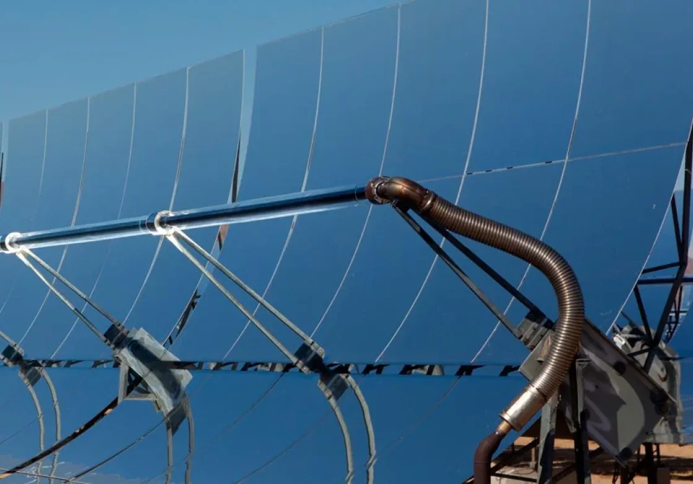

Nuovi specchi solari in Puglia e Campania
Sono entrati in funzione dodici nuovi impianti, che proteggono le produzioni di olio, pomodoro e mozzarella.

Dodici nuovi impianti di specchi solari sono entrati in funzione tra la provincia di Foggia, la piana del Sele e l'agro nocerino-sarnese. Con questi gli impianti attivi in Italia diventano 46.
Gli specchi riflettono la luce del sole sulle nubi basse e le dissolvono prima che arrivino sui campi. Sono pensati per l'autunno e l'inverno, quando le giornate sono corte e le colture come l'olivo e il pomodoro da industria hanno bisogno di luce nelle settimane della raccolta.
Nelle zone di compensazione collegate, Molise e Basilicata, non cambia il numero di interventi previsti dal calendario.
Impianti attivi in Italia · 46, di cui 12 nuovi.
Come funzionano gli specchi solari